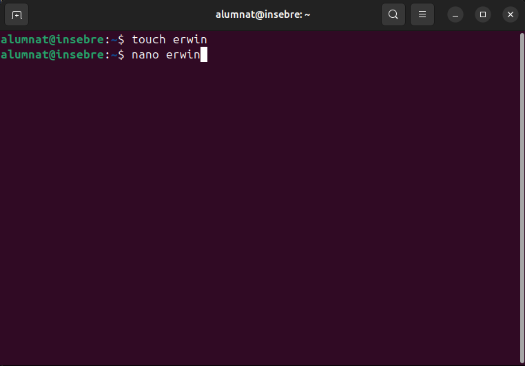
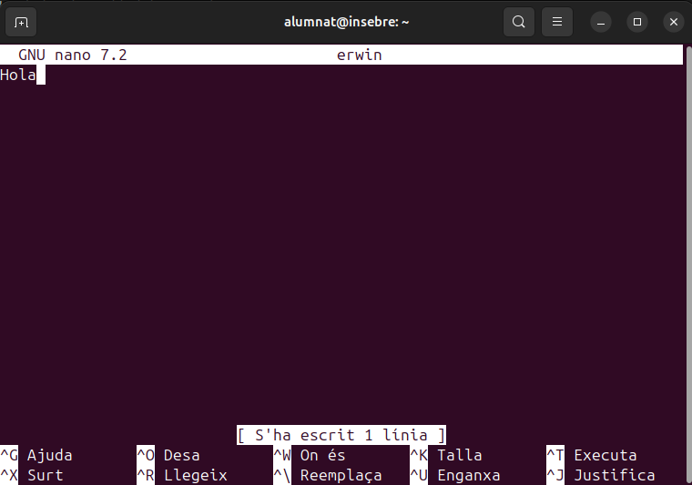
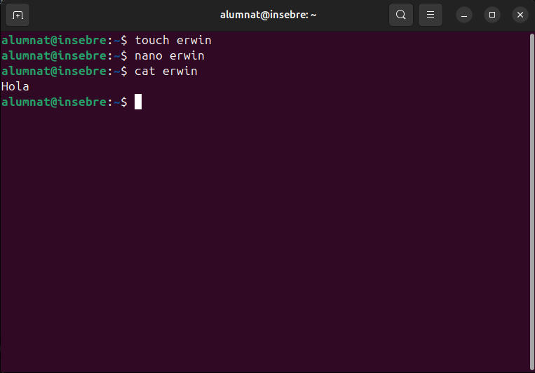
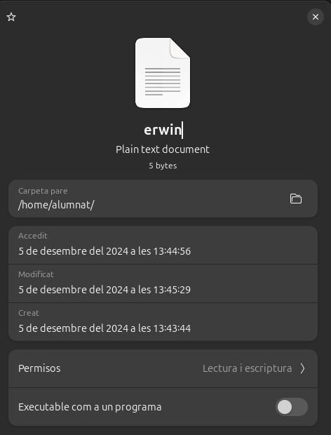
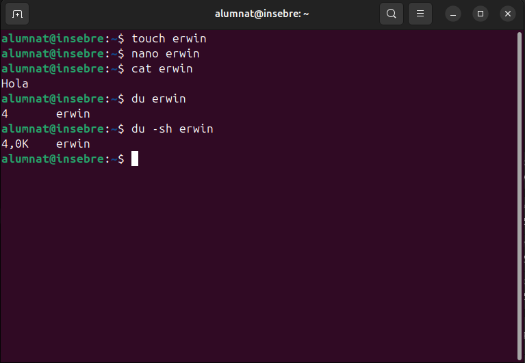

Sistemes de fitxers i particions
Estructura de la informació
Mida sector i bloc
El sector és la unitat mínima física on es guarden les dades d'un disco. Per defecte és 512 bytes i aquesta mida no es pot canviar mai. Aquí, per comprovar que això sigui real crearem un arxiu amb touch, i l'editarem amb un nano.

Un cop tenim l'arxiu creat amb la comanda touch, l'editem i posem un text dintre.

Un cop hem creat l'arxiu, comprovem que s'hagi creat correctament amb la comanda cat
cat erwin

Hem vist anteriorment que sí que existeix l'arxiu, per tant, obrirem la carpeta i premem el botó dret damunt de l'arxiu i després seleccionarem "Propietats". Com podem comprovar la mida de l'arxiu és de 5 bytes.

Amb la comanda du -sh, el que estem fent és una comanda que permet veure a l'usuari la cantitat real de temps que esta gastant
-du: és una abreviatura de "Disk usage", serveix per a inspeccionar l'ús despai en arxius i directoris.
--s: Fa que només es mostri l'arxiu especificat, i no es posi a detallar cada subdirectori.
-h: Fa que mostri la mida del arxiu en bytes.

Com hem pogut comprovar, l'arxiu realment ocupa 4 kbytes, fent que l'arxiu ocupi més del que realment ocupa. Aquestos 4 kbytes és el que ocupa cada bloc, és a dir, que cada bloc, està format per 8 sectors.
Fragmentació interna i externa
La fragmentació interna és l’espai desaprofitat dins dels blocs perquè un fitxer no omple completament el bloc assignat. Això es pot reduir ajustant la mida dels blocs. Blocs més petits redueixen la fragmentació interna però poden disminuir el rendiment, especialment per a fitxers grans. Blocs més grans són eficients per a fitxers grans, però generen més fragmentació interna amb fitxers petits.
Quan un sistema operatiu utilitza el disc amb el temps, pot aparèixer fragmentació externa, on els blocs d’un mateix fitxer queden dispersos al disc. Això perjudica el rendiment. Per resoldre-ho, alguns sistemes operatius implementen eines de desfragmentació, tot i que els sistemes moderns sovint minimitzen aquest problema de manera automàtica.
Tipus de formateig
Tipus de formateig
Formateig de Baix Nivell
El formateig de baix nivell s'executa directament sobre el disc físic a nivell de sectors. Aquest tipus de formateig detecta i intenta reparar sectors defectuosos, esborrant completament els fitxers i fent que la seva recuperació sigui gairebé impossible.
Exemple pràctic: Aquest tipus de formateig és realitzat pels fabricants de discos abans de la seva distribució. Aquest procés crea la infraestructura física necessària per a l'emmagatzematge de dades. Els usuaris finals rarament realitzen aquest tipus de formateig, però hi ha eines especialitzades que permeten utilitzar-lo en casos de necessitat per reparar sectors defectuosos. Per exemple, si un disc dur presenta sectors defectuosos, es pot utilitzar una eina de formateig de baix nivell per intentar reparar-los i restaurar la funcionalitat del disc.
Formateig de Nivell Mitjà
El formateig de nivell mitjà configura el sistema de fitxers, com ara FAT32, NTFS o ext4. Aquest tipus de formateig no esborra físicament les dades, sinó que elimina la informació sobre la seva ubicació al sistema de fitxers. Això significa que els fitxers es poden recuperar amb eines especialitzades fins que es sobreescriguin.
Exemple pràctic: Un exemple comú de formateig de nivell mitjà és canviar el sistema de fitxers d'un disc dur extern de FAT32 a ext4 per millorar la compatibilitat amb sistemes Linux. Aquest tipus de formateig és útil quan necessites optimitzar el sistema de fitxers segons els tipus de dades que es gestionen. Per exemple, si tens un disc dur extern que utilitzes per emmagatzemar bases de dades grans, canviar el sistema de fitxers a ext4 et permetrà gestionar millor els fitxers sense limitacions de mida.
Formateig d'Alt Nivell o Ràpid
El formateig d'alt nivell o ràpid és una variant del formateig de nivell mitjà que elimina únicament les metadades del sistema de fitxers. Aquest tipus de formateig és més ràpid però menys segur si es vol evitar que les dades es puguin recuperar.
Exemple pràctic: Un exemple pràctic d'aquest tipus de formateig és utilitzar el formateig ràpid per reinicialitzar una targeta SD abans de gravar-hi noves fotos o vídeos. Aquest tipus de formateig s'usa habitualment per alliberar espai ràpidament sense eliminar físicament les dades existents. Per exemple, si necessites preparar una targeta SD per a una nova sessió de fotos i no t'importa que les dades antigues puguin ser recuperades, pots utilitzar el formateig ràpid per esborrar les metadades i començar de nou en pocs segons.
Creació de particions i formats
Creació de particions i formats
Les particions són divisions lògiques d'un disc dur que permeten organitzar i gestionar millor l'espai d'emmagatzematge. Cada partició pot tenir un sistema de fitxers diferent i es pot utilitzar per a diferents finalitats, com ara instal·lar diversos sistemes operatius o separar dades personals dels fitxers del sistema. Avantatges de les particions:
- Organització de dades: Permeten separar diferents tipus de dades, com ara fitxers del sistema operatiu, dades personals i aplicacions, facilitant la gestió i la seguretat de la informació.
- Multi-sistema operatiu: Faciliten la instal·lació de múltiples sistemes operatius en un mateix disc dur, permetent als usuaris triar quin sistema arrencar.
- Millora del rendiment: Poden ajudar a millorar el rendiment del sistema, ja que els fitxers del sistema operatiu es poden mantenir separats de les dades personals, reduint la fragmentació.
- Seguretat de dades: En cas de fallada del sistema operatiu, les dades emmagatzemades en altres particions poden romandre intactes, facilitant la recuperació.
- Còpies de seguretat: Faciliten la creació de còpies de seguretat, ja que es poden fer còpies de particions específiques en lloc de tot el disc dur.
- Gestió d'espai: Permeten assignar espai d'emmagatzematge de manera més eficient segons les necessitats específiques de cada tipus de dades o aplicació.
Tipus de particions
- Partició Primària: És una partició que pot contenir un sistema operatiu i és necessària per arrencar l'ordinador. Un disc dur pot tenir fins a quatre particions primàries.
- Partició Estesa: És una partició que pot contenir múltiples particions lògiques. Només es pot crear una partició estesa per disc, però dins d'ella es poden crear diverses particions lògiques.
- Partició Lògica: Són particions creades dins d'una partició estesa. No es poden utilitzar per arrencar el sistema operatiu, però són útils per organitzar dades.
Com gestionar particions amb Linux
Per gestionar particions en Linux, es poden utilitzar diverses eines de línia de comandes i interfícies gràfiques. Algunes de les eines més comunes són fdisk, parted i gparted.
Utilitzant fdisk
fdisk és una eina de línia de comandes per crear i manipular taules de particions.
-
Llistar les particions existents:
sudo fdisk -l -
Obrir un disc per editar:
sudo fdisk /dev/sdX -
Crear una nova partició:
- Premeu
nper crear una nova partició. - Seguiu les instruccions per especificar el tipus de partició i la mida.
- Premeu
-
Escriure els canvis i sortir:
- Premeu
wper escriure els canvis al disc i sortir.
- Premeu
Utilitzant parted
parted és una altra eina de línia de comandes que suporta particions GPT i MBR.
-
Iniciar
parted:sudo parted /dev/sdX -
Crear una nova partició:
(parted) mkpart primary ext4 0% 50% -
Verificar les particions:
(parted) print -
Sortir:
(parted) quit
Utilitzant gparted
gparted és una interfície gràfica per a parted.
-
Instal·lar
gparted:sudo apt-get install gparted -
Obrir
gparted:sudo gparted -
Utilitzar la interfície gràfica per crear, redimensionar, moure i eliminar particions.
Com gestionar particions amb Windows
En Windows, es poden gestionar particions utilitzant l'eina de Gestió de Discos.
-
Obrir Gestió de Discos:
- Premeu
Win + Xi seleccioneuGestió de Discos.
- Premeu
-
Crear una nova partició:
- Feu clic dret a l'espai no assignat i seleccioneu
Nou volum simple. - Seguiu l'assistent per especificar la mida i formatar la partició.
- Feu clic dret a l'espai no assignat i seleccioneu
-
Redimensionar una partició:
- Feu clic dret a la partició que voleu redimensionar i seleccioneu
Redueix volumoAmplia volum. - Seguiu l'assistent per especificar la nova mida.
- Feu clic dret a la partició que voleu redimensionar i seleccioneu
-
Eliminar una partició:
- Feu clic dret a la partició que voleu eliminar i seleccioneu
Suprimeix volum.
- Feu clic dret a la partició que voleu eliminar i seleccioneu